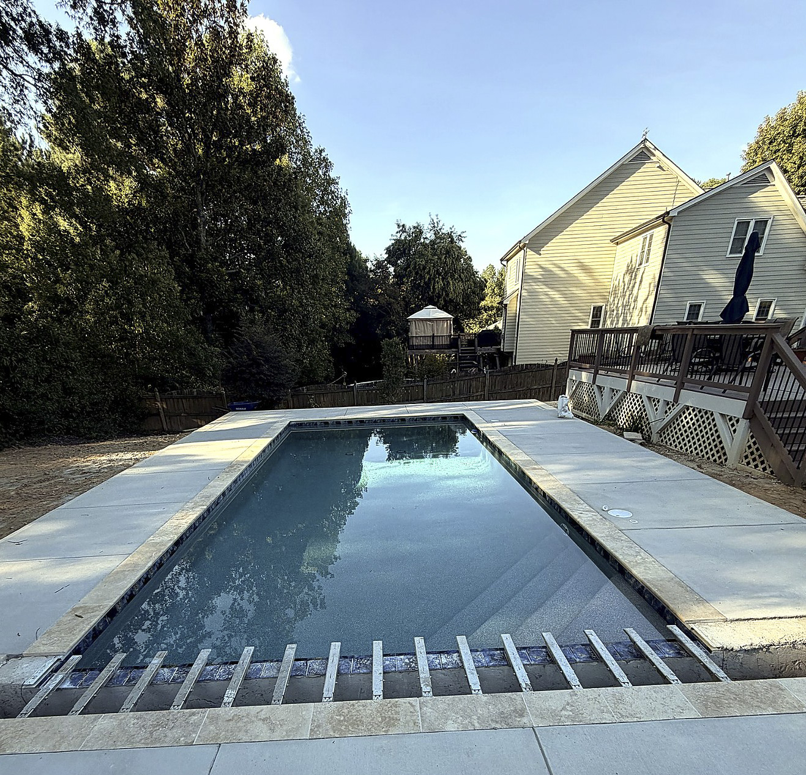
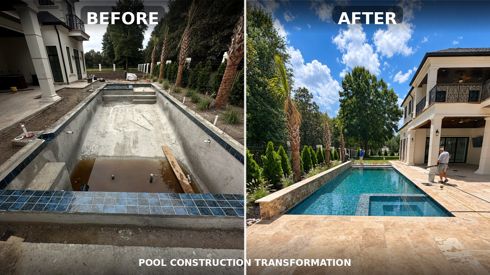
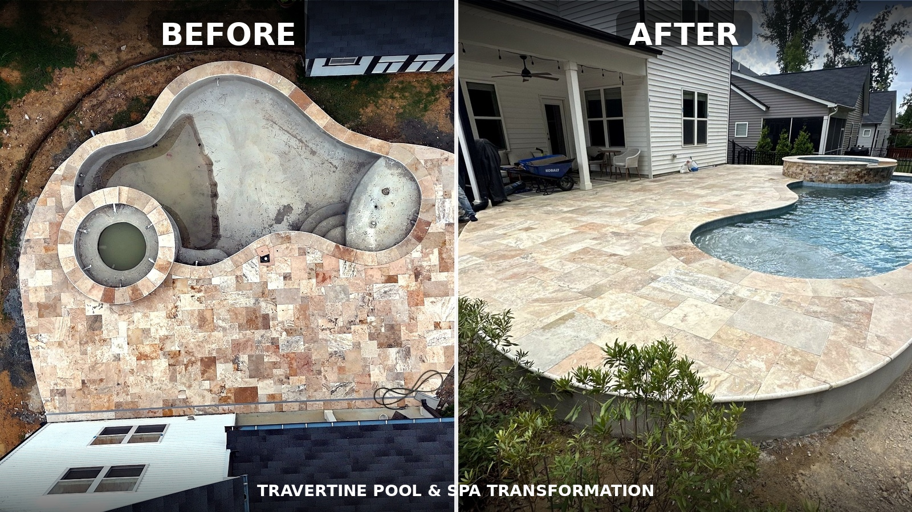
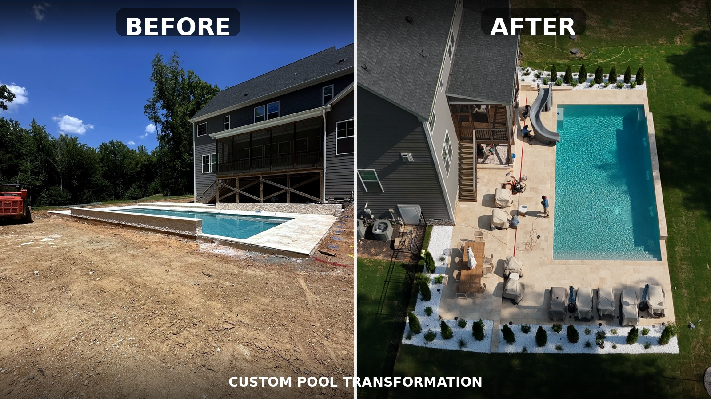

Resurfacing & replastering
Refresh the finish, color, comfort, and long-term performance of your pool interior.
Pool renovations & restoration
An outdated pool does not always need to be replaced. EMV transforms existing pools with upgraded finishes, new decking, improved features, and refreshed surroundings.
Transform my existing pool →A better version of what you have
From resurfacing and replastering to tile, coping, equipment, lighting, and full surroundings, we make tired pools feel new again.

Refresh the finish, color, comfort, and long-term performance of your pool interior.

Add new tile, coping, steps, benches, water features, lighting, and equipment upgrades.

Coordinate pool, travertine, stone details, and surrounding spaces into one finished result.
Before & after transformations

Your pool can feel new again